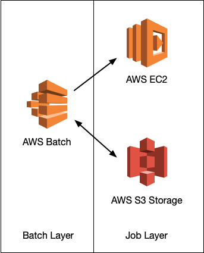
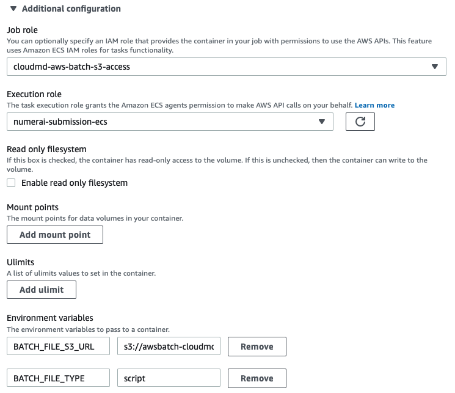

Run Molecular Dynamics Simulation on Container and AWS Batch
AWS and other cloud platform offers flexible computing resources at a reasonable price. There are many ways to take advantage of such cloud resource. In the last post, I examined running MD simulation using AWS Parallel Cluster. Here, I’m going to show you how to run MD simulation using AWS Batch
I used these articles when I wrote this post. It may be helpful for you as well: - Creating an AWS Batch environment for mixed CPU and GPU genomics workflows - Creating a Simple “Fetch & Run” AWS Batch Job
Initial Configuration
AWS Batch acts as a simple queuing system where the user can submit a task that can be ran on containers. We will have to create a compute environment on AWS Batch first. I created a managed compute environment, named gpu using AWS Batch Dashboard. I selected provision model as spot and allowed instances as p2 and p3. I set Maximum % on-demand price as 100%, which means, my instance will be terminated when the price of spot instance goes over 100% of the on-demand instance price.
Next, create a job queue called gpu and make it use the gpu compute environment we just created.
Prepare Containerized MD Simulation
Next, we prepare a Docker image for MD simulation. This Docker image will be used in a task. For a test, let’s prepare a very simple Dockerfile and use it for AWS Batch.
FROM nvidia/cuda:11.3.0-base-ubuntu18.04 as base
ENV PATH="/root/miniconda3/bin:${PATH}"
ARG PATH="/root/miniconda3/bin:${PATH}"
RUN apt-get update
RUN apt-get install -y wget && rm -rf /var/lib/apt/lists/*
RUN wget \
https://repo.anaconda.com/miniconda/Miniconda3-latest-Linux-x86_64.sh \
&& mkdir /root/.conda \
&& bash Miniconda3-latest-Linux-x86_64.sh -b \
&& rm -f Miniconda3-latest-Linux-x86_64.sh
RUN conda --version
RUN conda install -c conda-forge openmmI built the image and uploaded to Docker hub as sunhwan/openmm.
Next, let’s create a job definition from the AWS Batch Dashboard. I selected platform as EC2, image as sunhwan/openmm, and selected the number of GPUs as 1.
Command parameter in the job definition is what gets executed after initialize the Docker image. Because this is a test, let’s use python -m simtk.testInstallation for the command.
Submit Test Job
This is straightforward using the AWS Batch Dashboard. Select Submit New Job menu from the dashboard and select the job queue and the job definition we just created. It should populate default option for you. Select Submit at the bottom of the page, and Voilà, the job is submitted. Wait a few seconds (or minutes) and you should be able to see the job is being processed and finished running.
To check the output, you will have to check the log stream in the jobs detail page. Below is from my test.
--------------------------------------------------------------------------
| timestamp | message |
|---------------|--------------------------------------------------------|
| 1619451128901 | OpenMM Version: 7.5 |
| 1619451128901 | Git Revision: b49b82efb5a253a7c891ca084b3370e181de2ea3 |
| 1619451128901 | There are 3 Platforms available: |
| 1619451128901 | 1 Reference - Successfully computed forces |
| 1619451128901 | 2 CPU - Successfully computed forces |
| 1619451128901 | 3 CUDA - Successfully computed forces |
| 1619451128901 | Median difference in forces between platforms: |
| 1619451128901 | Reference vs. CPU: 6.29939e-06 |
| 1619451128901 | Reference vs. CUDA: 6.72706e-06 |
| 1619451128901 | CPU vs. CUDA: 7.36308e-07 |
| 1619451128901 | All differences are within tolerance. |
--------------------------------------------------------------------------More Realistic Test
Let’s try a more general example. Let’s create a job definition that can take script (and input structure) from AWS S3, run MD simulation, and store the output back on the S3 storage.

To achieve this, we need to prepare several settings:
S3 bucket
Create an S3 bucket for storing input script (or structure) and output.
IAM Role
Create an IAM roles that allows containers launched from jobs to access S3 storage. I created a role named
aws-batch-s3-accessforElastic Container Service>Elastic Container Service Task>AmazonS3FullAccess.Dockerfile
Based on the Dockerfile used in the previous section, I expanded it to install AWS CLI and use
fetch_and_run.shscript as an entrypoint script. Thefetch_and_run.shsimply download files from S3 using the user supplied environment variable (set in job definition).FROM sunhwan/openmm as base FROM nvidia/cuda:11.3.0-base-ubuntu18.04 ENV PATH="/root/miniconda3/bin:${PATH}" ARG PATH="/root/miniconda3/bin:${PATH}" RUN apt-get update && apt-get install -y unzip wget COPY --from=base /root/miniconda3/. /root/miniconda3 RUN wget "https://awscli.amazonaws.com/awscli-exe-linux-x86_64.zip" && \ unzip awscli-exe-linux-x86_64.zip && \ ./aws/install && \ rm -rf ./aws ADD fetch_and_run.sh /usr/local/bin/fetch_and_run.sh WORKDIR /tmp ENTRYPOINT ["/usr/local/bin/fetch_and_run.sh"]Upload job script to S3 bucket. I uploaded the following job script to S3. This file will be provided to job as a parameter.
$ cat > myjob.sh <<EOF #!/bin/bash date echo "Args: $@" env echo "This is my simple test job!." echo "jobId: $AWS_BATCH_JOB_ID" wget https://sunhwan.github.io/blog/assets/examples/cloudmd/charmm-gui-181l-openmm.tar.gz tar -xvzf charmm-gui-181l-openmm.tar.gz # prepare Slurm job script cd charmm-gui-1894063249/openmm /bin/bash run.sh EOF $ aws s3 cp myjob.sh s3://<bucket>/myjob.sh
That’s a lot of boilerplate! All is left is to revise the job definition file to submit a job. Note that we need to supply the IAM role for S3 access and the environment variables for fetch_and_run.sh script. The job script should

A job submitted with this definition will sit in a job queue for a while (it took me more time because I selected spot pricing and it appears the price at the moment was higher than what I asked) then started running and finished in about an hour after running the simulation.
My job script does not handles restarting in container properly. To handle this properly, the checkpoint file has to be written on S3 to make it persistent and examine if there’s any restart file in S3 storage when a new job started.
Conclusion
In the last post, I used AWS parallel-cluster to build a cluster quickly and ran MD simulation on GPU instance. This is great for users quickly test system setup and run MD simulation all at the same time.
This time, I looked at how I can set up MD simulation using Docker container and AWS Batch as a scheduler. Using container is great because my simulation will always run at a controlled environment. In addition, we now don’t have to maintain the master node because container image can be tested/deployed from a laptop.
Using AWS Batch and container does require more setup up front, however, if the tasks are well-defined and if the tasks do not change often, then it is a great way to simplify task setup and management. As an added benefit, all job definition/task submission can be done from a command line (using AWS CLI) or can be done progamatically using AWS API. It is probably very useful to set up some kind of high-throughput workflow that use MD simulation (e.g., docking -> run MM/GBSA or some adaptive MD simulation algorithm) when it is coupled with workflow scripts such as AWS Step Function.
One aspect that I find it challenging is how to bring files in and out of the container. I used S3 in this example, but I found this more cumbersome. Probably there are more convenient file storage options available for AWS container tasks.